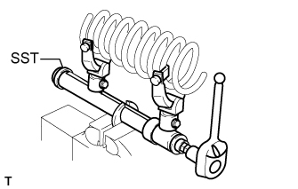
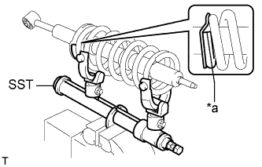
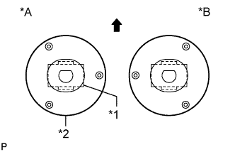

ПЕРЕДНИЙ АМОРТИЗАТОР > ПОВТОРНАЯ СБОРКА |
| 1. УСТАНОВИТЕ ВТУЛКУ ПЕРЕДНЕГО АМОРТИЗАТОРА |
 |
С помощью SST и пресса установите новую втулку амортизатора.
| 2. УСТАНОВИТЕ ПЕРЕДНЮЮ ЛЕВУЮ ЦИЛИНДРИЧЕСКУЮ ВИНТОВУЮ ПРУЖИНУ |
|  |
С помощью SST сожмите цилиндрическую винтовую пружину.
|  |
Установите на амортизатор цилиндрическую винтовую пружину.
| *a | Нижний конец |
| 3. УСТАНОВИТЕ ЛЕВУЮ ОПОРУ ПЕРЕДНЕЙ ПОДВЕСКИ В СБОРЕ |
Установите подушку, 2 держателя и опору подвески на шток поршня.
Не затягивая, установите новую гайку переднего амортизатора на опору подвески.
|  |
Расположите опору подвески, как показано на рисунке.
| *A | Левая сторона |
| *B | Правая сторона |
| *1 | Втулка амортизатора |
| *2 | Опора подвески в сборе |
 | Передняя сторона |
Снимите SST.
| 4. ЗАТЯНИТЕ ГАЙКУ КРЕПЛЕНИЯ ПЕРЕДНЕЙ ОПОРЫ К ПЕРЕДНЕМУ АМОРТИЗАТОРУ |
Затяните новую гайку.